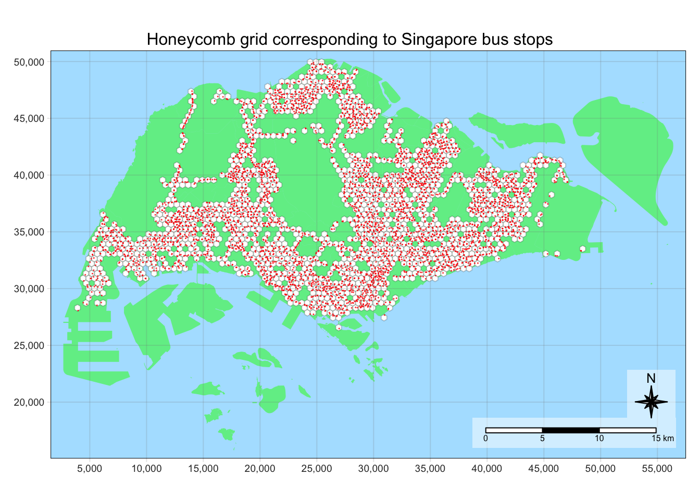

pacman::p_load(sf, tmap, tidyverse, knitr)Take Home Exercise 1A: Data Wrangling
Overview
The aim of this study is to uncover spatial and spatio-temporal mobility patterns of public bus passengers in Singapore.
The main modes of analysis to be used here are Local Indicators of Spatial Association (GLISA) and Emerging Hot Spot Analysis (EHSA).
In doing these study, we will be looking at bus trips started during the hours below.
| Peak hour period | Bus tap on time |
|---|---|
| Weekday morning peak | 6am to 9am |
| Weekday evening peak | 5pm to 8pm |
| Weekend/holiday morning peak | 11am to 2pm |
| Weekend/holiday evening peak | 4pm to 7pm |
More details about the study can be found here.
In this part of the study, we will do data wrangling on the data sets so that they are transformed into a form that can be used for geovisualization and spatial analysis.
Setup
Preparing the data sets
Geospatial
These data sets are in shp format.
Master Plan 2019 Subzone Boundary (Web), originally from data.gov.sg but used the one provided on E-learn.
Bus Stop Locations, available publicly from LTA DataMall
Aspatial
These data sets are in csv format.
Passenger Volume By Origin Destination Bus Stops from LTA DataMall via API (need to request for access)
August 2023
September 2023
October 2023 - we will focus on this as the main data set
Preparing the data/ directory
Before starting our analysis, we have to organize the data sets in a directory.
Geospatial data will be located under
data/geospatialAspatial data will be located under
data/aspatialdata/rdsto be created to store data that we can reuse and to make our code reproduceable.
Finally, we are left with the following file structure:
Take-home_Ex1
├── Take-home_Ex1.qmd
└── data
├── aspatial
│ ├── origin_destination_bus_202308.csv
│ ├── origin_destination_bus_202309.csv
│ └── origin_destination_bus_202310.csv
├── geospatial
│ ├── BusStop.cpg
│ ├── BusStop.dbf
│ ├── BusStop.lyr
│ ├── BusStop.prj
│ ├── BusStop.sbn
│ ├── BusStop.sbx
│ ├── BusStop.shp
│ ├── BusStop.shp.xml
│ ├── BusStop.shx
│ ├── MPSZ-2019.cpg
│ ├── MPSZ-2019.dbf
│ ├── MPSZ-2019.prj
│ ├── MPSZ-2019.qmd
│ ├── MPSZ-2019.shp
│ └── MPSZ-2019.shx
└── rdsSetting Up the R Environment
After preparing the data sets, we can finally proceed to load the R packages needed for this study.
tmap: for thematic mapping
sf: for geospatial data handling
tidyverse: for non-spatial data handling
knitr:for prettifying presentation
Methodology
After setting up the data sets and the R environment, we can finally proceed with data wrangling.
Using data sets prepared in Preparing the data sets, we will proceed with these general steps:
Importing data
Processing (filtering, joining)
Cleaning
Saving data as
rdsfile
As the wrangling process is expected to have a lot of intermediate steps, Save points and Checkpoints will be available along the way so we can save and load processed data and won’t have to restart all over again.
Generating a honeycomb grid from mpsz data
As per the specifications of this study, we must use a honeycomb grid, a tesselation of hexagons to replace the mpsz data set.
Why hexagons?
Some benefits of using a hexagons are:
A hexagon is the polygon with the most number of sides that can tessellate (or tile). Hence it is the most “circular” of the polygons that can be tessellated.
Distances of the centroid from one hexagon to the next are consistent all around the hexagon, making it easy to find neighbors.
More information about hexagons in the context of spatial analysis can be found in https://desktop.arcgis.com/en/arcmap/latest/tools/spatial-statistics-toolbox/h-whyhexagons.htm
Tip
As in the map in [Singapore boundary data], the subzones have different shapes and sizes. The analysis will benefit from using a consistently-shaped regions because our analysis requires a lot of neighbor calculations.
Importing Singapore boundary data
We will use the Master Plan 2019 Subzone Boundary (Web) data set that has been used in class. This is a shp file, that we will import by using `st_read()
mpsz <- st_read(dsn = "data/geospatial",
layer = "MPSZ-2019")Reading layer `MPSZ-2019' from data source
`/Users/kjcpaas/Documents/Grad School/ISSS624/Project/ISSS624/Take-home_Ex1/data/geospatial'
using driver `ESRI Shapefile'
Simple feature collection with 332 features and 6 fields
Geometry type: MULTIPOLYGON
Dimension: XY
Bounding box: xmin: 103.6057 ymin: 1.158699 xmax: 104.0885 ymax: 1.470775
Geodetic CRS: WGS 84
Important
mpsz <- mpsz %>% st_transform(crs=3414)
head(mpsz)Simple feature collection with 6 features and 6 fields
Geometry type: MULTIPOLYGON
Dimension: XY
Bounding box: xmin: 8012.578 ymin: 22108.68 xmax: 35287.9 ymax: 31092.38
Projected CRS: SVY21 / Singapore TM
SUBZONE_N SUBZONE_C PLN_AREA_N PLN_AREA_C REGION_N
1 MARINA EAST MESZ01 MARINA EAST ME CENTRAL REGION
2 INSTITUTION HILL RVSZ05 RIVER VALLEY RV CENTRAL REGION
3 ROBERTSON QUAY SRSZ01 SINGAPORE RIVER SR CENTRAL REGION
4 JURONG ISLAND AND BUKOM WISZ01 WESTERN ISLANDS WI WEST REGION
5 FORT CANNING MUSZ02 MUSEUM MU CENTRAL REGION
6 MARINA EAST (MP) MPSZ05 MARINE PARADE MP CENTRAL REGION
REGION_C geometry
1 CR MULTIPOLYGON (((33222.98 29...
2 CR MULTIPOLYGON (((28481.45 30...
3 CR MULTIPOLYGON (((28087.34 30...
4 WR MULTIPOLYGON (((14557.7 304...
5 CR MULTIPOLYGON (((29542.53 31...
6 CR MULTIPOLYGON (((35279.55 30...Now that the data frame has the correct projection, let’s do a quick plot to visually check if we have the boundaries that we need.
tmap_style("natural")
tm_shape(mpsz) +
tm_fill("lightgreen", title = "Singapore Boundary") +
tm_borders(alpha = 0.5) +
tm_layout(main.title = "Map of Singapore",
main.title.position = "center",
main.title.size = 1.0,
legend.height = 0.35,
legend.width = 0.35,
frame = TRUE) +
tm_compass(type="8star", size = 2) +
tm_scale_bar() +
tm_grid(alpha = 0.2)
Generating hexagons
For this study, we will create hexagons with apothem of 250m. This is the distance of the line segment from the center to the midpoint of the edge.
Tip
The edge length is 288.675m.
\[ 250m/cos(30) = 288.675m \]
Following the steps on https://urbandatapalette.com/post/2021-08-tessellation-sf/, we will use st_make_grid() to generate the hexagons for analysis.
We need to provide a value for cellsize in the function, which is defined as “for hexagonal cells the distance between opposite edges”.
This is equivalent to \(2 \times L_{apothem} = 2 \times 250m\), which is 500m.
sg_honeycomb <- st_make_grid(mpsz,
cellsize = 500,
what = "polygon",
square = FALSE) %>%
st_sf()
Important
We have to use st_sf() to convert the result to a data frame that can be used for the succeeding steps.
Let’s check if the honeycomb grid fits with Singapore.
tm_shape(sg_honeycomb) +
tm_fill(col = "white", title = "Hexagons") +
tm_borders(alpha = 0.5) +
tm_layout(main.title = "Singapore with honeycomb grid",
main.title.position = "center",
main.title.size = 1.0,
legend.height = 0.35,
legend.width = 0.35,
frame = TRUE) +
tm_compass(type="8star", size = 2, bg.color = "white", bg.alpha = 0.5) +
tm_scale_bar(bg.color = "white", bg.alpha = 0.5) +
tm_shape(mpsz) +
tm_fill("green", title = "Singapore Boundary", alpha = 0.5)
Note
The grid has been generated correctly because:
It covers exactly the whole country of Singapore.
Looking at the scale, there are 10 hexagons within a 5 km length. This means each hexagon has an apothem of 250m, as expected.
Fitting grid exactly to the region
The grid above has hexagons outside of Singapore bounds. We need to filter the grid such that we are left with only the hexagons that intersect with Singapore boundary.
We will use st_intersects() and filter() to filter out the hexagons that intersect Singapore.
sg_honeycomb$n_collisions = lengths(st_intersects(sg_honeycomb, mpsz))
sg_honeycomb <- filter(sg_honeycomb, n_collisions > 0)Let’s generate a map again if the cleaning generated our expected result.
tm_shape(sg_honeycomb) +
tm_fill(col = "white", title = "Hexagons") +
tm_borders(alpha = 0.5) +
tm_layout(main.title = "Singapore with honeycomb grid",
main.title.position = "center",
main.title.size = 1.0,
legend.height = 0.35,
legend.width = 0.35,
frame = TRUE) +
tm_compass(type="8star", size = 2) +
tm_scale_bar() +
tm_grid(alpha =0.2) +
tm_shape(mpsz) +
tm_fill("green", title = "Singapore Boundary", alpha = 0.5)
Important
There are some tiny islands outside of the Singapore mainland. Although they have no bus stops, we will keep them in the data frame for now as other hexagons also do not have bus stops in them (as they have no red dots inside).
Adding an ID for each cell
Now that we have perfectly fitting hexagon grid, we will assign a HEXAGON_ID for each hexagon to make each cell identifiable for further analysis.
We will also remove n_collisions column as we do not need it anymore.
sg_honeycomb = sg_honeycomb %>%
mutate(HEXAGON_ID = row_number()) %>%
select(, -n_collisions)
head(sg_honeycomb)Simple feature collection with 6 features and 1 field
Geometry type: POLYGON
Dimension: XY
Bounding box: xmin: 2167.538 ymin: 22388.25 xmax: 2917.538 ymax: 27295.73
Projected CRS: SVY21 / Singapore TM
HEXAGON_ID geometry
1 1 POLYGON ((2417.538 24553.31...
2 2 POLYGON ((2667.538 22388.25...
3 3 POLYGON ((2667.538 23254.27...
4 4 POLYGON ((2667.538 24120.3,...
5 5 POLYGON ((2667.538 24986.33...
6 6 POLYGON ((2667.538 26718.38...Now that we have the assigned an ID to each hexagon, we have the desired form of the grid.
Save point
Let’s save the honeycomb grid as an rds file so we can reuse it later.
write_rds(sg_honeycomb, "data/rds/sg_honeycomb.rds")
Caution
From this point forward, we will be using sg_honeycomb to do the analysis. Hence, we can already remove mpsz from the environment.
By removing this, we are left with data in our environment that are relevant to the next part of the study.
rm(mpsz)Getting the hexagon cells corresponding to each bus stop
Checkpoint
If you want to restart from this point, run the following code chunk to load the relevant data.
This only works if you have previously ran the code chunks above this and have the needed rds files saved.
sg_honeycomb = read_rds("data/rds/sg_honeycomb.rds")The spatial analysis of this study must be done on a hexagon level. Hence, we must aggregate the commuter data of the possibly multiple bus stops within a hexagon.
With that said, the goal of this part is to generate a mapping of each bus stop to the HEXAGON_ID of the hexagon that contains it.
Importing the BusStop data set
The BusStop data set is a in shp format. We can import it by using st_read() from the sf package.
We also need to project it to
busstops <- st_read(dsn = "data/geospatial",
layer = "BusStop")Reading layer `BusStop' from data source
`/Users/kjcpaas/Documents/Grad School/ISSS624/Project/ISSS624/Take-home_Ex1/data/geospatial'
using driver `ESRI Shapefile'
Simple feature collection with 5161 features and 3 fields
Geometry type: POINT
Dimension: XY
Bounding box: xmin: 3970.122 ymin: 26482.1 xmax: 48284.56 ymax: 52983.82
Projected CRS: SVY21st_crs(busstops)Coordinate Reference System:
User input: SVY21
wkt:
PROJCRS["SVY21",
BASEGEOGCRS["WGS 84",
DATUM["World Geodetic System 1984",
ELLIPSOID["WGS 84",6378137,298.257223563,
LENGTHUNIT["metre",1]],
ID["EPSG",6326]],
PRIMEM["Greenwich",0,
ANGLEUNIT["Degree",0.0174532925199433]]],
CONVERSION["unnamed",
METHOD["Transverse Mercator",
ID["EPSG",9807]],
PARAMETER["Latitude of natural origin",1.36666666666667,
ANGLEUNIT["Degree",0.0174532925199433],
ID["EPSG",8801]],
PARAMETER["Longitude of natural origin",103.833333333333,
ANGLEUNIT["Degree",0.0174532925199433],
ID["EPSG",8802]],
PARAMETER["Scale factor at natural origin",1,
SCALEUNIT["unity",1],
ID["EPSG",8805]],
PARAMETER["False easting",28001.642,
LENGTHUNIT["metre",1],
ID["EPSG",8806]],
PARAMETER["False northing",38744.572,
LENGTHUNIT["metre",1],
ID["EPSG",8807]]],
CS[Cartesian,2],
AXIS["(E)",east,
ORDER[1],
LENGTHUNIT["metre",1,
ID["EPSG",9001]]],
AXIS["(N)",north,
ORDER[2],
LENGTHUNIT["metre",1,
ID["EPSG",9001]]]]The EPSG value is 9001, which correspond to WGS84. We have to fix the projection by transforming to SVY21with EPSG value of 3414.
busstops <- st_transform(busstops, crs = 3414)Next, let’s take a look at the available columns to identify which columns we can use for analysis. We will decide this later after looking at other data sets.
kable(head(busstops))| BUS_STOP_N | BUS_ROOF_N | LOC_DESC | geometry |
|---|---|---|---|
| 22069 | B06 | OPP CEVA LOGISTICS | POINT (13576.31 32883.65) |
| 32071 | B23 | AFT TRACK 13 | POINT (13228.59 44206.38) |
| 44331 | B01 | BLK 239 | POINT (21045.1 40242.08) |
| 96081 | B05 | GRACE INDEPENDENT CH | POINT (41603.76 35413.11) |
| 11561 | B05 | BLK 166 | POINT (24568.74 30391.85) |
| 66191 | B03 | AFT CORFE PL | POINT (30951.58 38079.61) |
Note
From this initial look in the data, we will only retain BUS_STOP_N and LOC_DESC as they seem to be the most relevant to the analysis.
Let’s do a quick plot to see a visual glimpse of the data.
tmap_style("natural")
tm_shape(sg_honeycomb) +
tm_fill("lightgreen", title = "Singapore Honeycomb Grid") +
tm_borders(alpha = 0.5) +
tm_layout(main.title = "Bus Stop Locations in Singapore",
main.title.position = "center",
main.title.size = 1.0,
legend.height = 0.35,
legend.width = 0.35,
frame = TRUE) +
tm_compass(type="8star", size = 2) +
tm_scale_bar() +
tm_grid(alpha =0.2) +
tm_shape(busstops) +
tm_dots(col = "red", size = 0.001, title = "Bus Stops")
Overlaying the bus stop locations helps us visualize which hexagons contain the bus stops. Some observations are:
Some hexagons have no bus stops, especially islands outside the mainland
Some hexagons have multiple bus stops. These are most likely from areas with high commuter traffic (e.g. residential, business districts)
We need to formalize this connections in the data layer.
Important
Some bus stops on the North are outside of the border. These are the bus stops that for bus routes (e.g. CWx, SJE) the cross the border to Johor Bahru in Malaysia üá≤üáæ
Mapping bus stop locations to honeycomb cells
Next, we have to figure out which hexagons contains each point corresponding to bus stop locations.
This can be done using st_intersection(). We will also drop the geometry here using st_drop_geometry() and make the data spatial as the resulting mapping will be used as the connector to join the aspatial bus commuter data with the hexagons.
busstop_cells <- st_intersection(busstops, sg_honeycomb) %>%
st_drop_geometry() %>%
select(c(BUS_STOP_N, LOC_DESC, HEXAGON_ID)) %>%
rename(BUS_STOP_ID = BUS_STOP_N) %>%
rename(BUS_STOP_NAME = LOC_DESC)
kable(head(busstop_cells))| BUS_STOP_ID | BUS_STOP_NAME | HEXAGON_ID | |
|---|---|---|---|
| 3269 | 25059 | AFT TUAS STH BLVD | 48 |
| 254 | 26379 | YONG NAM | 70 |
| 2570 | 25751 | BEF TUAS STH AVE 14 | 82 |
| 2897 | 25761 | OPP REC S’PORE | 82 |
| 4203 | 26389 | BEF TUAS STH AVE 5 | 84 |
| 2403 | 26369 | SEE HUP SENG | 85 |
Note
Notice that busstop_cells has 5165 rows while busstops has 5161. The five missing bus stops correspond to those outside of Singapore border noticed in [##Importing the BusStop data set].
Save point
Now that we have the mapping table, let’s save this as an rds file so we can reuse it later.
write_rds(busstop_cells, "data/rds/busstop_cells.rds")Counting bus stops inside hexagons
Note
There are a lot of hexagons with no bus stops so we can potentially get heavily skewed data because the number on trips in those hexagons will always be 0.
To help in analysis, we will at the number of bus stops in each hexagon. This can help in purposes like filtering hexagons with bus stops. This can be done with the combination of lengths() and st_intersects() as demonstrated in Fitting grid exactly to the region.
sg_honeycomb$NUM_BUS_STOPS <- lengths(st_intersects(sg_honeycomb, busstops))
kable(sg_honeycomb[121:130,])| HEXAGON_ID | geometry | NUM_BUS_STOPS | |
|---|---|---|---|
| 121 | 121 | POLYGON ((5417.538 28017.41… | 0 |
| 122 | 122 | POLYGON ((5417.538 28883.44… | 0 |
| 123 | 123 | POLYGON ((5417.538 29749.47… | 1 |
| 124 | 124 | POLYGON ((5417.538 30615.49… | 2 |
| 125 | 125 | POLYGON ((5417.538 31481.52… | 1 |
| 126 | 126 | POLYGON ((5417.538 32347.54… | 1 |
| 127 | 127 | POLYGON ((5417.538 33213.57… | 4 |
| 128 | 128 | POLYGON ((5417.538 34079.59… | 2 |
| 129 | 129 | POLYGON ((5417.538 34945.62… | 0 |
| 130 | 130 | POLYGON ((5667.538 21522.22… | 0 |
Save point
Let’s save the updated sg_honeycomb for reuse later.
write_rds(sg_honeycomb, "data/rds/sg_honeycomb_with_num_busstops.rds")
Caution
From this point forward, we do not need the raw busstops data frame anymore so we can remove it from the environment.
rm(busstops)Aggregating bus trips started every hour within hexagons
Next we will process the aspatial data set to have the hourly bus trips started for each hexagon. We will aggregate the hourly data, not just the peaks so we can reuse it for Emerging Hot Spot Analysis later on.
Importing bus commuter data
We will use the Passenger Volume By Origin Destination Bus Stops data set to provide data about bus commuter volumes.
These files are in csv file format so we will use read_csv to import them.
Important
We aim to analyze data for 3 months. However, we will focus on the October 2023 for now to simplify the steps.
odbus202310 <- read_csv("data/aspatial/origin_destination_bus_202310.csv")
glimpse(odbus202310)Rows: 5,694,297
Columns: 7
$ YEAR_MONTH <chr> "2023-10", "2023-10", "2023-10", "2023-10", "2023-…
$ DAY_TYPE <chr> "WEEKENDS/HOLIDAY", "WEEKDAY", "WEEKENDS/HOLIDAY",…
$ TIME_PER_HOUR <dbl> 16, 16, 14, 14, 17, 17, 17, 7, 14, 14, 10, 20, 20,…
$ PT_TYPE <chr> "BUS", "BUS", "BUS", "BUS", "BUS", "BUS", "BUS", "…
$ ORIGIN_PT_CODE <chr> "04168", "04168", "80119", "80119", "44069", "2028…
$ DESTINATION_PT_CODE <chr> "10051", "10051", "90079", "90079", "17229", "2014…
$ TOTAL_TRIPS <dbl> 3, 5, 3, 5, 4, 1, 24, 2, 1, 7, 3, 2, 5, 1, 1, 1, 1…Converting relevant columns to factor data type
The columns we are interested in are:
ORIGIN_PT_CODEDAY_TYPETIME_PER_HOUR(will not be converted to factor so we can do arithmetic operations)
These are data with finite values with these corresponding number of values:
| Column Name | Number of Values | Description |
|---|---|---|
ORIGIN_PT_CODE |
5156 | Corresponding to number of rows in busstop_cells |
DAY_TYPE |
2 | Weekday, Weekdays/Holidays |
TIME_PER_HOUR |
24 | corresponding to hours per day |
| Number of hexagons *for reference | 4131 |
Note
When we are done with this processing, we expect at most 247,488 rows in the data frame after [##Aggregating trips by origin bus stop, hour of day, day type].
\[ 5156 \times 2 \times 24 = 247,488 \]
On the other hand, after aggregating on a hexagon level, we expect at most 198,288 rows in the final output.
\[ 4131 \times 2 \times 24 = 198,288 \]
odbus202310$ORIGIN_PT_CODE <- as.factor(odbus202310$ORIGIN_PT_CODE)
odbus202310$DAY_TYPE <- as.factor(odbus202310$DAY_TYPE)Aggregating trips by origin bus stop, day type, hour of day
To do this aggregation, we need to:
Group data by
ORIGIN_PT_CODE,DAY_TYPE, andTIME_PER_HOURAggregate the
TOTAL_TRIPSby getting the sum of said value for each groupRename
ORIGIN_PT_CODEtoBUS_STOP_IDto have the same column name asbusstop_cells.Rename
TIME_PER_HOURtoHOUR_OF_DAYto be more descriptive of its purpose.
This can be achieved by using group_by(), summarise(), and rename().
hourly_from_bs202310 <-
odbus202310 %>%
group_by(
ORIGIN_PT_CODE,
DAY_TYPE,
TIME_PER_HOUR) %>%
summarise(TRIPS = sum(TOTAL_TRIPS)) %>%
rename(BUS_STOP_ID = ORIGIN_PT_CODE) %>%
rename(HOUR_OF_DAY = TIME_PER_HOUR)
kable(hourly_from_bs202310[15:50,])| BUS_STOP_ID | DAY_TYPE | HOUR_OF_DAY | TRIPS |
|---|---|---|---|
| 01012 | WEEKDAY | 17 | 2266 |
| 01012 | WEEKDAY | 18 | 2470 |
| 01012 | WEEKDAY | 19 | 2042 |
| 01012 | WEEKDAY | 20 | 1222 |
| 01012 | WEEKDAY | 21 | 1701 |
| 01012 | WEEKDAY | 22 | 1501 |
| 01012 | WEEKDAY | 23 | 796 |
| 01012 | WEEKENDS/HOLIDAY | 0 | 204 |
| 01012 | WEEKENDS/HOLIDAY | 5 | 16 |
| 01012 | WEEKENDS/HOLIDAY | 6 | 87 |
| 01012 | WEEKENDS/HOLIDAY | 7 | 128 |
| 01012 | WEEKENDS/HOLIDAY | 8 | 183 |
| 01012 | WEEKENDS/HOLIDAY | 9 | 242 |
| 01012 | WEEKENDS/HOLIDAY | 10 | 306 |
| 01012 | WEEKENDS/HOLIDAY | 11 | 416 |
| 01012 | WEEKENDS/HOLIDAY | 12 | 561 |
| 01012 | WEEKENDS/HOLIDAY | 13 | 582 |
| 01012 | WEEKENDS/HOLIDAY | 14 | 618 |
| 01012 | WEEKENDS/HOLIDAY | 15 | 810 |
| 01012 | WEEKENDS/HOLIDAY | 16 | 764 |
| 01012 | WEEKENDS/HOLIDAY | 17 | 838 |
| 01012 | WEEKENDS/HOLIDAY | 18 | 757 |
| 01012 | WEEKENDS/HOLIDAY | 19 | 702 |
| 01012 | WEEKENDS/HOLIDAY | 20 | 537 |
| 01012 | WEEKENDS/HOLIDAY | 21 | 556 |
| 01012 | WEEKENDS/HOLIDAY | 22 | 619 |
| 01012 | WEEKENDS/HOLIDAY | 23 | 345 |
| 01013 | WEEKDAY | 0 | 100 |
| 01013 | WEEKDAY | 6 | 180 |
| 01013 | WEEKDAY | 7 | 138 |
| 01013 | WEEKDAY | 8 | 254 |
| 01013 | WEEKDAY | 9 | 269 |
| 01013 | WEEKDAY | 10 | 318 |
| 01013 | WEEKDAY | 11 | 468 |
| 01013 | WEEKDAY | 12 | 615 |
| 01013 | WEEKDAY | 13 | 758 |
Save point
We will save hourly_from_bs202310 as this processed data will be useful later on.
write_rds(hourly_from_bs202310, "data/rds/hourly_from_bs202310.rds")
Caution
We also do not need odbus202310 anymore so we can remove it from the environment.
rm(odbus202310)Aggregating by hexagons
Checkpoint
If you want to restart from this point, run the following code chunk to load the relevant data.
This only works if you have previously ran the code chunks above this and have the needed rds files saved.
busstop_cells = read_rds("data/rds/busstop_cells.rds")
hourly_from_bs202310 = read_rds("data/rds/hourly_from_bs202310.rds")Joining aspatial data
As the goal of this study is to analyze data based on the hexagons, we need to do further processing on hourly_from_bs202310 to aggregate the data based on hexagons.
To do that, we will first do a left_join() of busstop_cells to hourly_from_bs202310. This will add information on which cell the bus stops belong to. We will also apply unique() to the resulting data set get rid of duplicate information.
hourly_from_hex202310 <-
left_join(
hourly_from_bs202310,
busstop_cells
)
glimpse(hourly_from_hex202310)Rows: 191,176
Columns: 6
Groups: BUS_STOP_ID, DAY_TYPE [10,099]
$ BUS_STOP_ID <chr> "01012", "01012", "01012", "01012", "01012", "01012", "0…
$ DAY_TYPE <fct> WEEKDAY, WEEKDAY, WEEKDAY, WEEKDAY, WEEKDAY, WEEKDAY, WE…
$ HOUR_OF_DAY <dbl> 0, 1, 5, 6, 7, 8, 9, 10, 11, 12, 13, 14, 15, 16, 17, 18,…
$ TRIPS <dbl> 434, 1, 32, 231, 375, 724, 440, 579, 739, 885, 1064, 113…
$ BUS_STOP_NAME <chr> "HOTEL GRAND PACIFIC", "HOTEL GRAND PACIFIC", "HOTEL GRA…
$ HEXAGON_ID <int> 2597, 2597, 2597, 2597, 2597, 2597, 2597, 2597, 2597, 25…This is a strange result as hourly_from_hex202310 has more number of rows than hourly_from_bs202310 (191176 vs 190551). The most plausible explanation is that there are columns with NA.
hourly_from_hex202310[
rowSums(is.na(hourly_from_hex202310)) > 0,
] %>%
head()# A tibble: 6 × 6
# Groups: BUS_STOP_ID, DAY_TYPE [1]
BUS_STOP_ID DAY_TYPE HOUR_OF_DAY TRIPS BUS_STOP_NAME HEXAGON_ID
<chr> <fct> <dbl> <dbl> <chr> <int>
1 03361 WEEKDAY 7 8 <NA> NA
2 03361 WEEKDAY 8 3 <NA> NA
3 03361 WEEKDAY 10 17 <NA> NA
4 03361 WEEKDAY 11 7 <NA> NA
5 03361 WEEKDAY 12 5 <NA> NA
6 03361 WEEKDAY 13 4 <NA> NAThere are rows without HEXAGON_ID. This means that there are bus stops in hourly_from_hex202310 that are not in busstop_cells. As these missing bus stops do not have spatial data, we can remove these rows as we cannot do spatial analysis without it.
hourly_from_hex202310 <-
hourly_from_hex202310 %>%
filter(!is.na(HEXAGON_ID))
glimpse(hourly_from_hex202310)Rows: 189,004
Columns: 6
Groups: BUS_STOP_ID, DAY_TYPE [9,978]
$ BUS_STOP_ID <chr> "01012", "01012", "01012", "01012", "01012", "01012", "0…
$ DAY_TYPE <fct> WEEKDAY, WEEKDAY, WEEKDAY, WEEKDAY, WEEKDAY, WEEKDAY, WE…
$ HOUR_OF_DAY <dbl> 0, 1, 5, 6, 7, 8, 9, 10, 11, 12, 13, 14, 15, 16, 17, 18,…
$ TRIPS <dbl> 434, 1, 32, 231, 375, 724, 440, 579, 739, 885, 1064, 113…
$ BUS_STOP_NAME <chr> "HOTEL GRAND PACIFIC", "HOTEL GRAND PACIFIC", "HOTEL GRA…
$ HEXAGON_ID <int> 2597, 2597, 2597, 2597, 2597, 2597, 2597, 2597, 2597, 25…
Note
We could have also used inner_join instead of left_join. However, we did not have enough information to expect that there are bus stops without spatial data.
Aggregating trips by hexagon_id, , day type, hour of day
Following the same method as in Aggregating trips by origin bus stop, day type, hour of day, we will aggregate the data by HEXAGON_ID, DAY_TYPE, and TIME_PER_HOUR.
hourly_from_hex202310 <-
hourly_from_hex202310 %>%
group_by(
HEXAGON_ID,
DAY_TYPE,
HOUR_OF_DAY) %>%
summarise(TRIPS = sum(TRIPS))
kable(head(hourly_from_hex202310, n = 30))| HEXAGON_ID | DAY_TYPE | HOUR_OF_DAY | TRIPS |
|---|---|---|---|
| 48 | WEEKDAY | 7 | 74 |
| 48 | WEEKDAY | 8 | 19 |
| 48 | WEEKDAY | 9 | 10 |
| 48 | WEEKDAY | 10 | 7 |
| 48 | WEEKDAY | 16 | 26 |
| 48 | WEEKDAY | 17 | 122 |
| 48 | WEEKDAY | 18 | 224 |
| 48 | WEEKDAY | 19 | 38 |
| 48 | WEEKDAY | 20 | 6 |
| 48 | WEEKENDS/HOLIDAY | 7 | 28 |
| 48 | WEEKENDS/HOLIDAY | 8 | 9 |
| 48 | WEEKENDS/HOLIDAY | 9 | 9 |
| 48 | WEEKENDS/HOLIDAY | 10 | 2 |
| 48 | WEEKENDS/HOLIDAY | 16 | 3 |
| 48 | WEEKENDS/HOLIDAY | 17 | 21 |
| 48 | WEEKENDS/HOLIDAY | 18 | 18 |
| 48 | WEEKENDS/HOLIDAY | 19 | 14 |
| 48 | WEEKENDS/HOLIDAY | 20 | 1 |
| 70 | WEEKDAY | 6 | 23 |
| 70 | WEEKDAY | 7 | 24 |
| 70 | WEEKDAY | 8 | 26 |
| 70 | WEEKDAY | 9 | 5 |
| 70 | WEEKDAY | 10 | 39 |
| 70 | WEEKDAY | 11 | 107 |
| 70 | WEEKDAY | 12 | 43 |
| 70 | WEEKDAY | 13 | 9 |
| 70 | WEEKDAY | 14 | 53 |
| 70 | WEEKDAY | 15 | 174 |
| 70 | WEEKDAY | 16 | 257 |
| 70 | WEEKDAY | 17 | 159 |
Save point
We will save hourly_from_hex202310 as this processed data will be useful later on.
write_rds(hourly_from_hex202310, "data/rds/hourly_from_hex202310.rds")As we do not need hourly_from_bs202310 anymore, we can also remove it from the environment.
rm(hourly_from_bs202310)Extracting peak hour data
Checkpoint
If you want to restart from this point, run the following code chunk to load the relevant data.
This only works if you have previously ran the code chunks above this and have the needed rds files saved.
sg_honeycomb = read_rds("data/rds/sg_honeycomb_with_num_busstops.rds")
hourly_from_hex202310 = read_rds("data/rds/hourly_from_hex202310.rds")We have to do the study on the following times:
| Peak hour period | Bus tap on time |
|---|---|
| Weekday morning peak | 6am to 9am |
| Weekday afternoon peak | 5pm to 8pm |
| Weekend/holiday morning peak | 11am to 2pm |
| Weekend/holiday evening peak | 4pm to 7pm |
Filter
hourly_from_hex202310byHOUR_OF_DAYbased on range above, andDAY_TYPEGrouping values by
HEXAGON_IDAggregating the groups by getting total trips
We will also collect these data on a data frame with the honeycomb geometry.
bus_peaks_hc202310 <- sg_honeycombWeekday morning peak (6 - 9am)
Following the methodology above, we will first filter and aggregate trip data by BUS_STOP_ID
weekday_am <-
hourly_from_hex202310 %>%
filter(DAY_TYPE == "WEEKDAY") %>%
filter(HOUR_OF_DAY >= 6 &
HOUR_OF_DAY < 9) %>%
group_by(HEXAGON_ID) %>%
summarise(TRIPS = sum(TRIPS))
glimpse(weekday_am)Rows: 1,488
Columns: 2
$ HEXAGON_ID <int> 48, 70, 82, 84, 85, 94, 95, 96, 97, 98, 110, 112, 113, 114,…
$ TRIPS <dbl> 93, 73, 185, 265, 43, 54, 1268, 935, 50, 395, 143, 1540, 6,…Next storing them in a column in bus_peaks_hc202310 via left_join(). We will also rename TRIPS to WEEKDAY_AM_TRIPS for better identification.
bus_peaks_hc202310 <-
left_join(bus_peaks_hc202310, weekday_am) %>%
rename(WEEKDAY_AM_TRIPS = TRIPS)
glimpse(bus_peaks_hc202310)Rows: 4,131
Columns: 4
$ HEXAGON_ID <int> 1, 2, 3, 4, 5, 6, 7, 8, 9, 10, 11, 12, 13, 14, 15, 16…
$ NUM_BUS_STOPS <int> 0, 0, 0, 0, 0, 0, 0, 0, 0, 0, 0, 0, 0, 0, 0, 0, 0, 0,…
$ WEEKDAY_AM_TRIPS <dbl> NA, NA, NA, NA, NA, NA, NA, NA, NA, NA, NA, NA, NA, N…
$ geometry <POLYGON [m]> POLYGON ((2417.538 24553.31..., POLYGON ((266…We can see that WEEKDAY_AM_TRIPS is NA for some rows. We will set these to 0 for consistency with the data type dbl.
bus_peaks_hc202310$WEEKDAY_AM_TRIPS[is.na(bus_peaks_hc202310$WEEKDAY_AM_TRIPS)] <- 0
summary(bus_peaks_hc202310$WEEKDAY_AM_TRIPS) Min. 1st Qu. Median Mean 3rd Qu. Max.
0 0 0 5076 1536 336087 The median of WEEKDAY_AM_TRIPS is 0. This is problematic as this heavily skews the data. Let’s revert the NA values for hexagons without bus stops as counting the bus trips started in those areas does not make sense anyway.
bus_peaks_hc202310$WEEKDAY_AM_TRIPS[bus_peaks_hc202310$NUM_BUS_STOPS == 0] <- NA
summary(bus_peaks_hc202310$WEEKDAY_AM_TRIPS) Min. 1st Qu. Median Mean 3rd Qu. Max. NA's
0 745 5993 13804 17931 336087 2612 The data distribution is much less skewed now. Let’s have a peek at the data again.
kable(bus_peaks_hc202310[121:130,])| HEXAGON_ID | NUM_BUS_STOPS | WEEKDAY_AM_TRIPS | geometry | |
|---|---|---|---|---|
| 121 | 121 | 0 | NA | POLYGON ((5417.538 28017.41… |
| 122 | 122 | 0 | NA | POLYGON ((5417.538 28883.44… |
| 123 | 123 | 1 | 26 | POLYGON ((5417.538 29749.47… |
| 124 | 124 | 2 | 89 | POLYGON ((5417.538 30615.49… |
| 125 | 125 | 1 | 144 | POLYGON ((5417.538 31481.52… |
| 126 | 126 | 1 | 1185 | POLYGON ((5417.538 32347.54… |
| 127 | 127 | 4 | 196 | POLYGON ((5417.538 33213.57… |
| 128 | 128 | 2 | 222 | POLYGON ((5417.538 34079.59… |
| 129 | 129 | 0 | NA | POLYGON ((5417.538 34945.62… |
| 130 | 130 | 0 | NA | POLYGON ((5667.538 21522.22… |
Caution
Now that we have the correct data, we can remove weekday_am as the data it has is already in bus_peaks_hc202310.
rm(weekday_am)We can proceed to applying the same for the other peak times. I won’t go into detail of each step.
Weekday evening peak (5 - 8pm)
weekday_pm <-
hourly_from_hex202310 %>%
filter(DAY_TYPE == "WEEKDAY") %>%
filter(HOUR_OF_DAY >= 17 &
HOUR_OF_DAY < 20) %>%
group_by(HEXAGON_ID) %>%
summarise(TRIPS = sum(TRIPS))
glimpse(weekday_pm)Rows: 1,490
Columns: 2
$ HEXAGON_ID <int> 48, 70, 82, 84, 85, 94, 95, 96, 97, 98, 110, 112, 113, 114,…
$ TRIPS <dbl> 384, 263, 1812, 259, 211, 259, 2633, 1995, 344, 85, 510, 14…bus_peaks_hc202310 <-
left_join(bus_peaks_hc202310, weekday_pm) %>%
rename(WEEKDAY_PM_TRIPS = TRIPS)
bus_peaks_hc202310$WEEKDAY_PM_TRIPS[
bus_peaks_hc202310$NUM_BUS_STOPS > 0 &
is.na(bus_peaks_hc202310$WEEKDAY_PM_TRIPS)
] <- 0
kable(bus_peaks_hc202310[121:130,])| HEXAGON_ID | NUM_BUS_STOPS | WEEKDAY_AM_TRIPS | WEEKDAY_PM_TRIPS | geometry | |
|---|---|---|---|---|---|
| 121 | 121 | 0 | NA | NA | POLYGON ((5417.538 28017.41… |
| 122 | 122 | 0 | NA | NA | POLYGON ((5417.538 28883.44… |
| 123 | 123 | 1 | 26 | 121 | POLYGON ((5417.538 29749.47… |
| 124 | 124 | 2 | 89 | 1177 | POLYGON ((5417.538 30615.49… |
| 125 | 125 | 1 | 144 | 1074 | POLYGON ((5417.538 31481.52… |
| 126 | 126 | 1 | 1185 | 1838 | POLYGON ((5417.538 32347.54… |
| 127 | 127 | 4 | 196 | 2542 | POLYGON ((5417.538 33213.57… |
| 128 | 128 | 2 | 222 | 895 | POLYGON ((5417.538 34079.59… |
| 129 | 129 | 0 | NA | NA | POLYGON ((5417.538 34945.62… |
| 130 | 130 | 0 | NA | NA | POLYGON ((5667.538 21522.22… |
Caution
Now that we have the correct data, we can remove weekday_pm as the data it has is already in bus_peaks_hc202310.
rm(weekday_pm)Weekend/holiday morning peak (11am - 2pm)
weekend_am <-
hourly_from_hex202310 %>%
filter(DAY_TYPE == "WEEKENDS/HOLIDAY") %>%
filter(HOUR_OF_DAY >= 11 &
HOUR_OF_DAY < 14) %>%
group_by(HEXAGON_ID) %>%
summarise(TRIPS = sum(TRIPS))
glimpse(weekend_am)Rows: 1,492
Columns: 2
$ HEXAGON_ID <int> 70, 82, 84, 85, 94, 95, 96, 97, 98, 110, 112, 113, 114, 123…
$ TRIPS <dbl> 41, 154, 75, 56, 18, 358, 547, 36, 22, 36, 824, 5, 3043, 11…bus_peaks_hc202310 <-
left_join(bus_peaks_hc202310, weekend_am) %>%
rename(WEEKEND_AM_TRIPS = TRIPS)
bus_peaks_hc202310$WEEKEND_AM_TRIPS[
bus_peaks_hc202310$NUM_BUS_STOPS > 0 &
is.na(bus_peaks_hc202310$WEEKEND_AM_TRIPS)
] <- 0
kable(bus_peaks_hc202310[121:130,])| HEXAGON_ID | NUM_BUS_STOPS | WEEKDAY_AM_TRIPS | WEEKDAY_PM_TRIPS | WEEKEND_AM_TRIPS | geometry | |
|---|---|---|---|---|---|---|
| 121 | 121 | 0 | NA | NA | NA | POLYGON ((5417.538 28017.41… |
| 122 | 122 | 0 | NA | NA | NA | POLYGON ((5417.538 28883.44… |
| 123 | 123 | 1 | 26 | 121 | 11 | POLYGON ((5417.538 29749.47… |
| 124 | 124 | 2 | 89 | 1177 | 118 | POLYGON ((5417.538 30615.49… |
| 125 | 125 | 1 | 144 | 1074 | 110 | POLYGON ((5417.538 31481.52… |
| 126 | 126 | 1 | 1185 | 1838 | 785 | POLYGON ((5417.538 32347.54… |
| 127 | 127 | 4 | 196 | 2542 | 227 | POLYGON ((5417.538 33213.57… |
| 128 | 128 | 2 | 222 | 895 | 29 | POLYGON ((5417.538 34079.59… |
| 129 | 129 | 0 | NA | NA | NA | POLYGON ((5417.538 34945.62… |
| 130 | 130 | 0 | NA | NA | NA | POLYGON ((5667.538 21522.22… |
Caution
Now that we have the correct data, we can remove weekday_pm as the data it has is already in bus_peaks_hc202310.
rm(weekend_am)Weekend/holiday evening peak (4 - 7pm)
weekend_pm <-
hourly_from_hex202310 %>%
filter(DAY_TYPE == "WEEKENDS/HOLIDAY") %>%
filter(HOUR_OF_DAY >= 16 &
HOUR_OF_DAY < 19) %>%
group_by(HEXAGON_ID) %>%
summarise(TRIPS = sum(TRIPS))
glimpse(weekend_pm)Rows: 1,487
Columns: 2
$ HEXAGON_ID <int> 48, 70, 82, 84, 85, 94, 95, 96, 97, 98, 110, 112, 113, 114,…
$ TRIPS <dbl> 42, 89, 275, 94, 42, 41, 622, 814, 48, 105, 63, 1064, 6, 30…bus_peaks_hc202310 <-
left_join(bus_peaks_hc202310, weekend_pm) %>%
rename(WEEKEND_PM_TRIPS = TRIPS)
bus_peaks_hc202310$WEEKEND_PM_TRIPS[
bus_peaks_hc202310$NUM_BUS_STOPS > 0 &
is.na(bus_peaks_hc202310$WEEKEND_PM_TRIPS)
] <- 0
kable(bus_peaks_hc202310[121:130,])| HEXAGON_ID | NUM_BUS_STOPS | WEEKDAY_AM_TRIPS | WEEKDAY_PM_TRIPS | WEEKEND_AM_TRIPS | WEEKEND_PM_TRIPS | geometry | |
|---|---|---|---|---|---|---|---|
| 121 | 121 | 0 | NA | NA | NA | NA | POLYGON ((5417.538 28017.41… |
| 122 | 122 | 0 | NA | NA | NA | NA | POLYGON ((5417.538 28883.44… |
| 123 | 123 | 1 | 26 | 121 | 11 | 32 | POLYGON ((5417.538 29749.47… |
| 124 | 124 | 2 | 89 | 1177 | 118 | 160 | POLYGON ((5417.538 30615.49… |
| 125 | 125 | 1 | 144 | 1074 | 110 | 298 | POLYGON ((5417.538 31481.52… |
| 126 | 126 | 1 | 1185 | 1838 | 785 | 913 | POLYGON ((5417.538 32347.54… |
| 127 | 127 | 4 | 196 | 2542 | 227 | 533 | POLYGON ((5417.538 33213.57… |
| 128 | 128 | 2 | 222 | 895 | 29 | 64 | POLYGON ((5417.538 34079.59… |
| 129 | 129 | 0 | NA | NA | NA | NA | POLYGON ((5417.538 34945.62… |
| 130 | 130 | 0 | NA | NA | NA | NA | POLYGON ((5667.538 21522.22… |
Caution
Now that we have the correct data, we can remove weekday_pm as the data it has is already in bus_peaks_hc202310.
rm(weekend_pm)
Save point
We will save bus_peaks_hc202310 as this contains data we need for spatial analysis.
write_rds(bus_peaks_hc202310, "data/rds/bus_peaks_hc202310.rds")Applying data wrangling to the rest of odbus data set
Checkpoint
If you want to restart from this point, run the following code chunk to load the relevant data.
This only works if you have previously ran the code chunks above this and have the needed rds files saved.
busstop_cells = read_rds("data/rds/busstop_cells.rds")
sg_honeycomb = read_rds("data/rds/sg_honeycomb_with_num_busstops.rds")The steps we have applied so far were applied to the October 2023 bus commuter data. We will run through the same steps to do data wrangling for the September 2023 and August 2023 data sets as well.
From this point, we will be running the code chunks from Aggregating bus trips started every hour within hexagons to Extracting peak hour data.
Show code for August 2023
# Aggregate on bus stop level
odbus202308 <- read_csv("data/aspatial/origin_destination_bus_202308.csv")
odbus202308$ORIGIN_PT_CODE <- as.factor(odbus202308$ORIGIN_PT_CODE)
odbus202308$DAY_TYPE <- as.factor(odbus202308$DAY_TYPE)
hourly_from_bs202308 <-
odbus202308 %>%
group_by(
ORIGIN_PT_CODE,
DAY_TYPE,
TIME_PER_HOUR) %>%
summarise(TRIPS = sum(TOTAL_TRIPS)) %>%
rename(BUS_STOP_ID = ORIGIN_PT_CODE) %>%
rename(HOUR_OF_DAY = TIME_PER_HOUR)
write_rds(hourly_from_bs202308, "data/rds/hourly_from_bs202308.rds")
rm(odbus202308)
# Aggregate hexagon level
hourly_from_hex202308 <-
left_join(
hourly_from_bs202308,
busstop_cells
)
hourly_from_hex202308 <-
hourly_from_hex202308 %>%
group_by(
HEXAGON_ID,
DAY_TYPE,
HOUR_OF_DAY) %>%
summarise(TRIPS = sum(TRIPS))
write_rds(hourly_from_hex202308, "data/rds/hourly_from_hex202308.rds")
rm(hourly_from_bs202308)
# Extract peak bus hour commuter traffic
bus_peaks_hc202308 <- sg_honeycomb
weekday_am <-
hourly_from_hex202308 %>%
filter(DAY_TYPE == "WEEKDAY") %>%
filter(HOUR_OF_DAY >= 6 &
HOUR_OF_DAY < 9) %>%
group_by(HEXAGON_ID) %>%
summarise(TRIPS = sum(TRIPS))
bus_peaks_hc202308 <-
left_join(bus_peaks_hc202308, weekday_am) %>%
rename(WEEKDAY_AM_TRIPS = TRIPS)
bus_peaks_hc202308$WEEKDAY_AM_TRIPS[
bus_peaks_hc202308$NUM_BUS_STOPS > 0 &
is.na(bus_peaks_hc202308$WEEKDAY_AM_TRIPS)
] <- 0
rm(weekday_am)
weekday_pm <-
hourly_from_hex202308 %>%
filter(DAY_TYPE == "WEEKDAY") %>%
filter(HOUR_OF_DAY >= 17 &
HOUR_OF_DAY < 20) %>%
group_by(HEXAGON_ID) %>%
summarise(TRIPS = sum(TRIPS))
bus_peaks_hc202308 <-
left_join(bus_peaks_hc202308, weekday_pm) %>%
rename(WEEKDAY_PM_TRIPS = TRIPS)
bus_peaks_hc202308$WEEKDAY_PM_TRIPS[
bus_peaks_hc202308$NUM_BUS_STOPS > 0 &
is.na(bus_peaks_hc202308$WEEKDAY_PM_TRIPS)
] <- 0
rm(weekday_pm)
weekend_am <-
hourly_from_hex202308 %>%
filter(DAY_TYPE == "WEEKENDS/HOLIDAY") %>%
filter(HOUR_OF_DAY >= 11 &
HOUR_OF_DAY < 14) %>%
group_by(HEXAGON_ID) %>%
summarise(TRIPS = sum(TRIPS))
bus_peaks_hc202308 <-
left_join(bus_peaks_hc202308, weekend_am) %>%
rename(WEEKEND_AM_TRIPS = TRIPS)
bus_peaks_hc202308$WEEKEND_AM_TRIPS[
bus_peaks_hc202308$NUM_BUS_STOPS > 0 &
is.na(bus_peaks_hc202308$WEEKEND_AM_TRIPS)
] <- 0
rm(weekend_am)
weekend_pm <-
hourly_from_hex202308 %>%
filter(DAY_TYPE == "WEEKENDS/HOLIDAY") %>%
filter(HOUR_OF_DAY >= 16 &
HOUR_OF_DAY < 19) %>%
group_by(HEXAGON_ID) %>%
summarise(TRIPS = sum(TRIPS))
bus_peaks_hc202308 <-
left_join(bus_peaks_hc202308, weekend_pm) %>%
rename(WEEKEND_PM_TRIPS = TRIPS)
bus_peaks_hc202308$WEEKEND_PM_TRIPS[
bus_peaks_hc202308$NUM_BUS_STOPS > 0 &
is.na(bus_peaks_hc202308$WEEKEND_PM_TRIPS)
] <- 0
rm(weekend_pm)
write_rds(bus_peaks_hc202308, "data/rds/bus_peaks_hc202308.rds")Show code for September 2023
# Aggregate on bus stop level
odbus202309 <- read_csv("data/aspatial/origin_destination_bus_202309.csv")
odbus202309$ORIGIN_PT_CODE <- as.factor(odbus202309$ORIGIN_PT_CODE)
odbus202309$DAY_TYPE <- as.factor(odbus202309$DAY_TYPE)
hourly_from_bs202309 <-
odbus202309 %>%
group_by(
ORIGIN_PT_CODE,
DAY_TYPE,
TIME_PER_HOUR) %>%
summarise(TRIPS = sum(TOTAL_TRIPS)) %>%
rename(BUS_STOP_ID = ORIGIN_PT_CODE) %>%
rename(HOUR_OF_DAY = TIME_PER_HOUR)
write_rds(hourly_from_bs202309, "data/rds/hourly_from_bs202309.rds")
rm(odbus202309)
# Aggregate hexagon level
hourly_from_hex202309 <-
left_join(
hourly_from_bs202309,
busstop_cells
)
hourly_from_hex202309 <-
hourly_from_hex202309 %>%
group_by(
HEXAGON_ID,
DAY_TYPE,
HOUR_OF_DAY) %>%
summarise(TRIPS = sum(TRIPS))
write_rds(hourly_from_hex202309, "data/rds/hourly_from_hex202309.rds")
rm(hourly_from_bs202309)
# Extract peak bus hour commuter traffic
bus_peaks_hc202309 <- sg_honeycomb
weekday_am <-
hourly_from_hex202309 %>%
filter(DAY_TYPE == "WEEKDAY") %>%
filter(HOUR_OF_DAY >= 6 &
HOUR_OF_DAY < 9) %>%
group_by(HEXAGON_ID) %>%
summarise(TRIPS = sum(TRIPS))
bus_peaks_hc202309 <-
left_join(bus_peaks_hc202309, weekday_am) %>%
rename(WEEKDAY_AM_TRIPS = TRIPS)
bus_peaks_hc202309$WEEKDAY_AM_TRIPS[
bus_peaks_hc202309$NUM_BUS_STOPS > 0 &
is.na(bus_peaks_hc202309$WEEKDAY_AM_TRIPS)
] <- 0
rm(weekday_am)
weekday_pm <-
hourly_from_hex202309 %>%
filter(DAY_TYPE == "WEEKDAY") %>%
filter(HOUR_OF_DAY >= 17 &
HOUR_OF_DAY < 20) %>%
group_by(HEXAGON_ID) %>%
summarise(TRIPS = sum(TRIPS))
bus_peaks_hc202309 <-
left_join(bus_peaks_hc202309, weekday_pm) %>%
rename(WEEKDAY_PM_TRIPS = TRIPS)
bus_peaks_hc202309$WEEKDAY_PM_TRIPS[
bus_peaks_hc202309$NUM_BUS_STOPS > 0 &
is.na(bus_peaks_hc202309$WEEKDAY_PM_TRIPS)
] <- 0
rm(weekday_pm)
weekend_am <-
hourly_from_hex202309 %>%
filter(DAY_TYPE == "WEEKENDS/HOLIDAY") %>%
filter(HOUR_OF_DAY >= 11 &
HOUR_OF_DAY < 14) %>%
group_by(HEXAGON_ID) %>%
summarise(TRIPS = sum(TRIPS))
bus_peaks_hc202309 <-
left_join(bus_peaks_hc202309, weekend_am) %>%
rename(WEEKEND_AM_TRIPS = TRIPS)
bus_peaks_hc202309$WEEKEND_AM_TRIPS[
bus_peaks_hc202309$NUM_BUS_STOPS > 0 &
is.na(bus_peaks_hc202309$WEEKEND_AM_TRIPS)
] <- 0
rm(weekend_am)
weekend_pm <-
hourly_from_hex202309 %>%
filter(DAY_TYPE == "WEEKENDS/HOLIDAY") %>%
filter(HOUR_OF_DAY >= 16 &
HOUR_OF_DAY < 19) %>%
group_by(HEXAGON_ID) %>%
summarise(TRIPS = sum(TRIPS))
bus_peaks_hc202309 <-
left_join(bus_peaks_hc202309, weekend_pm) %>%
rename(WEEKEND_PM_TRIPS = TRIPS)
bus_peaks_hc202309$WEEKEND_PM_TRIPS[
bus_peaks_hc202309$NUM_BUS_STOPS > 0 &
is.na(bus_peaks_hc202309$WEEKEND_PM_TRIPS)
] <- 0
rm(weekend_pm)
write_rds(bus_peaks_hc202309, "data/rds/bus_peaks_hc202309.rds")Recap
We have done data wrangling and we now have the data we need for further visualization and spatial analysis.
We have the following rds files generated in this part of the study.
Take-home_Ex1/data/rds
├── bus_peaks_hc202308.rds
├── bus_peaks_hc202309.rds
├── bus_peaks_hc202310.rds
├── busstop_cells.rds
├── hourly_from_bs202308.rds
├── hourly_from_bs202309.rds
├── hourly_from_bs202310.rds
├── hourly_from_hex202308.rds
├── hourly_from_hex202309.rds
├── hourly_from_hex202310.rds
├── sg_honeycomb.rds
└── sg_honeycomb_with_num_busstops.rdsWe will be using these data files in the next part, Geovisualization and Analysis.